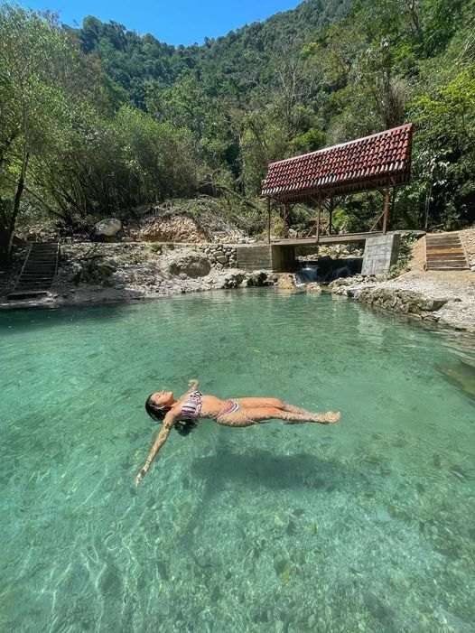

Agencia de viajes y turismo · Tingo María
Los Cristales – Agencia de viajes y turismo en Tingo María
Tours de día completo al Parque Nacional de Tingo María, la Laguna de los Milagros y la Catarata Honolulo.
Ver nuestros toursMás alláde la selva.

Nuestros tours
Elige tu aventura y descubre la selva de Tingo María.
Planifica tu viaje.
Cuéntanos qué tour te interesa, la fecha y cuántas personas vienen, y te ayudamos a organizarlo.
Contáctanos